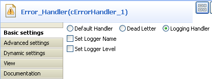
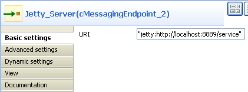
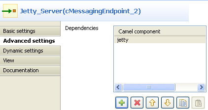
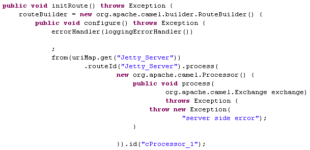
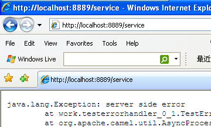
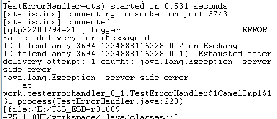

|
Famille de composant |
Exception | |
|
Fonction |
Le composant cErrorHandler fournit de multiples stratégies pour gérer les erreurs survenues lors du traitement d'un Event Driven Consumer. | |
|
Objectif |
Le cErrorHandler offre différentes stratégies de gestion des erreurs durant le traitement. | |
|
Basic settings |
Default Handler |
Ce gestionnaire d'erreur ne supporte pas la file dead letter (file des messages non reçus) et retourne les exceptions à l'expéditeur. |
|
Set Maximum Redeliveries : cochez cette case pour configurer le nombre de tentatives de livraison, dans le champ Maximum Redeliveries (int). | ||
|
Set Redelivery Delay : cochez cette case pour paramétrer le temps avant la première tentative de nouvelle livraison (en millisecondes) dans le champ Redelivery Delay (long). | ||
|
Set Retry Attempted Log Level : cochez cette case pour sélectionner le niveau de log des messages dans la liste Level lorsque les tentatives se produisent. | ||
|
Asynchronized Delayed Redelivery : cochez cette case pour permettre une nouvelle livraison asynchrone différée. | ||
|
Use Original Message : cochez cette case pour utiliser le message original lors de la nouvelle livraison. | ||
|
More Configurations by Code : cochez cette case afin de saisir les code, dans le champ Code pour une configuration avancée. | ||
|
Dead Letter |
Ce gestionnaire supporte les tentatives de livraison d'échange de messages un certain nombre de fois avant de l'envoyer dans un endpoint de messages non reçus. | |
|
Dead Letter Uri : cochez cette case pour configurer l'endpoint de la file de messages non reçus. Configurez les autres paramètres de la même manière que pour le Default Handler. | ||
|
Logging Handler |
Ce gestionnaire capture les exceptions. | |
|
Set Logger Name : cochez cette case afin de nommer le logger, dans le champ Name. | ||
|
Set Log Level : cochez cette case afin de sélectionner le niveau de log, dans la liste Level. | ||
|
Utilisation |
Le composant cErrorHandler fournit différentes stratégies de gestion des erreurs lors du traitement d'un Event Driven Consumer. | |
|
Limitation |
| |
Dans ce scénario, un serveur Jetty est démarré avant qu'un navigateur client demande d'accéder au serveur. Une exception est retournée du côté serveur et capturée par le cErrorHandler.
Déposez les composants suivants de la Palette dans l'espace de modélisation graphique : un cMessagingEndpoint, un cErrorHandler et un cProcessor, respectivement nommés Jetty_Server, Error_Handler et Throw_Exception.
Reliez le cMessagingEndpoint au cProcessor à l'aide d'un lien Row > Route.

Double-cliquez sur le cErrorHandler pour ouvrir sa vue Basic settings.
Sélectionnez l'option Logging Handler afin de capturer les exceptions retournées.
Double-cliquez sur le composant cMessagingEndpoint afin d'ouvrir sa vue Basic settings.
Dans le champ Uri, saisissez
jetty:http://localhost:8889/servicepour spécifier le serveur Jetty.Cliquez sur l'onglet Advanced settings pour configurer les propriétés avancées du composant.
Dans la table Dependencies, cliquez sur le bouton [+] afin d'ajouter une ligne et sélectionnez
jettydans la liste Camel component.Double-cliquez sur le cProcessor pour ouvrir sa vue Basic settings.

Dans le champ Code, saisissez
throw new Exception("server side error")afin de retourner une exception.Appuyez sur les touches Ctrl+S pour sauvegarder votre Route.
Cliquez sur l'onglet Code au bas de l'espace de modélisation graphique afin de visualiser le code généré.
Comme affiché ci-dessus, la Route commence à partir de (
from) l'endpointJetty_Serveret retourne l'exceptionserver side errorvia lecProcessor_1.Appuyez sur F6 pour exécuter la Route.

Le serveur Jetty a démarrré.
Lancez un navigateur Web et saisissez
http://localhost:8889/service(L'URI du serveur Jetty configurée précédemment) dans la barre d'adresse afin d'accéder au serveur.Comme affiché ci-dessus, la requête a échoué à cause d'une erreur du serveur.
Retournez dans le Studio et vérifiez les résultats dans l'onglet Run.
Comme affiché ci-dessus, le cErrorHandler a capturé l'exception au niveau ERROR.